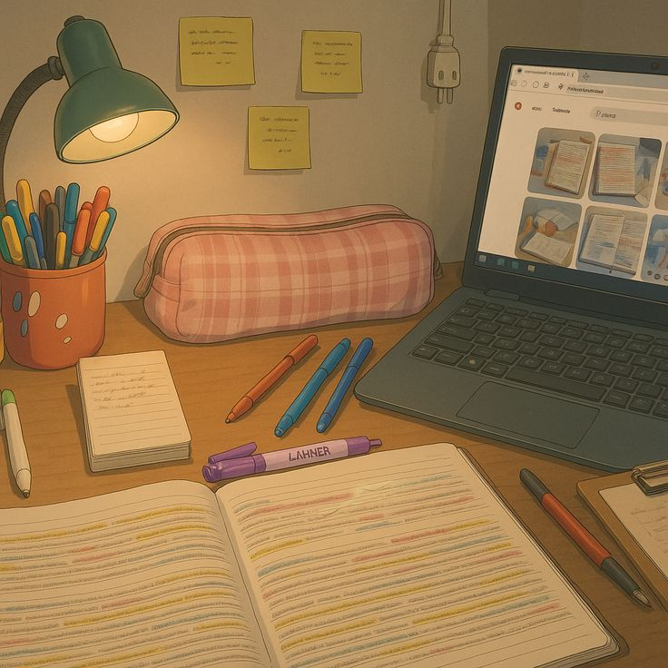

The place where a student studies can affect concentration.
A quiet and clean space often helps students finish work faster. A noisy or messy place can make learning more difficult.
Some students like libraries because they are calm and serious. Others prefer a room at home with good lighting and a comfortable chair. A quiet space supports attention, and a clean desk makes work feel easier.
The best study spot is different for each person. What matters most is feeling comfortable, focused, and ready to work. Good light and few distractions are important in any study area.
